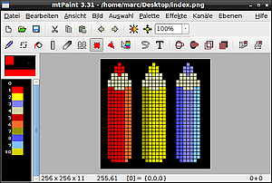
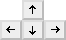
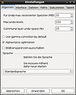

mtPaint
Dieser Artikel wurde für die folgenden Ubuntu-Versionen getestet:
Ubuntu 14.04 Trusty Tahr
Zum Verständnis dieses Artikels sind folgende Seiten hilfreich:
mtPaint  ist ein Bildbearbeitungsprogramm, welches auf GTK+ setzt und sich auch für ältere Hardware eignet. Das Programm kann sowohl mit indizierten als auch mit RGB-Bildern (24-Bit Farbtiefe) umgehen und bringt eine große Anzahl Pinsel, Masken und ein ansehnliches Sortiment an Grundmustern mit. Es ist vom Grundkonzept her ein Programm für pixelbasierte Bilder und eignet sich daher besonders für Pixel-Art.
ist ein Bildbearbeitungsprogramm, welches auf GTK+ setzt und sich auch für ältere Hardware eignet. Das Programm kann sowohl mit indizierten als auch mit RGB-Bildern (24-Bit Farbtiefe) umgehen und bringt eine große Anzahl Pinsel, Masken und ein ansehnliches Sortiment an Grundmustern mit. Es ist vom Grundkonzept her ein Programm für pixelbasierte Bilder und eignet sich daher besonders für Pixel-Art.
Mtpaint beherrscht den Umgang mit Ebenen sowie Farbkanälen und eignet sich damit auch zur Bildbearbeitung. Es kann mit den Formaten JPEG, PNG, GIF, TIFF, BMP, XPM und XBM umgehen. Die Oberfläche ist größtenteils auf Deutsch, jedoch durchsetzt mit nicht übersetzten englischen Menüeinträgen und Funktionsbezeichnungen.
Eine Auswahl der wichtigsten Programmfunktionen:
|  |
| mtPaint |
Mal- und Manipulationswerkzeuge wie Pinsel, Mischwerkzeug, Klonwerkzeug, Vierecke, Ellipsen, Polygone, Farbverläufe, Textwerkzeug, Spiegeln, Drehen und mehr.
81 voreingestellte Pinsel
100 voreingestellte zweifarbige Muster
Ebenenwerkzeuge (bis zu 100 Ebenen)
Auswahlwerkzeuge
Transparenz
Rücknahme/Wiederholen von Bearbeitungsschritten (bis zu 1000 Schritte)
Farbmanipulationen
Effektwerkzeuge
Hilfsmittel zur Erstellung von Programmsymbolen
Erstellung animierter GIF-Dateien
ASCII-Art (16 Farben)
Bildschirmfoto erstellen
Exportieren von Bildern in andere Programme wie Firefox, E-Mail-Programm, GIMP und Open/LibreOffice
Installation¶
Das Programm ist unter Lubuntu bereits vorinstalliert und übernimmt dort die Rolle des Standard-Zeichenprogramms. Zur Installation [1] wird bei anderen Ubuntu-Varianten folgendes Paket benötigt:
mtpaint (universe)
 mit apturl
mit apturl
Paketliste zum Kopieren:
sudo apt-get install mtpaint
sudo aptitude install mtpaint
Zum Erstellen von Animationen (animierte GIF-Dateien) ist zusätzlich das Paket gifsicle notwendig:
gifsicle (universe)
mit apturl
Paketliste zum Kopieren:
sudo apt-get install gifsicle
sudo aptitude install gifsicle
Verwendung¶
Unter den verschiedenen Desktopoberflächen wird im Rahmen der Installation automatisch ein Startersymbol für mtPaint erzeugt, welches über die Suchfunktion oder über den Unterpunkt "Grafik -> mtPaint" im jeweiligen Anwendungsmenü zugänglich ist.
Das Programm präsentiert sich in einer zunächst unscheinbar wirkenden, aufgeräumten und übersichtlichen Oberfläche, welche die überraschende Vielzahl an vorhandenen Programmfunktionen auf den ersten Blick verbirgt.
Im oberen Bereich des Programmfensters befindet sich die Menüleiste, welche Zugang zu den komplexeren Funktionen gewährt.
Darunter ist die Hauptleiste mit den wichtigsten Datei- und Ansichtsfunktionen zu sehen.
An dritter Stelle ist die Werkzeugleiste mit den Symbolen für die Basiswerkzeuge eingeblendet.
Links neben der Leinwand befindet sich die senkrecht angeordnete Farbpalette, welche im oberen Teil in einem gesonderten kleinen Feld Überblick über Vordergrund- und Hintergrundfarbe, die Pinselform sowie ein eventuelles Farbmuster bietet.
Die horizontal unter der Leinwand angeordnete Statusleiste zeigt die wichtigsten Bildinformationen an.
Separat erscheint bei Programmstart ein eigenes freischwebendes Fenster, welches Einstellungen anbietet.
Hinweis:
Die Sichtbarkeit der Leisten und Zusatzfenster lässt sich einzeln über das Menü "Ansicht" steuern. In diesem Menü stehen auch noch weitere hilfreiche Sonderfenster zum Einblenden zur Verfügung.
Die Bedienung stützt sich zwar prinzipiell auf intuitive Elemente (Werkzeugschaltflächen etc.), ist jedoch aufgrund reichhaltig gefüllter Programm-Menüs und unter der Oberfläche liegender, wenig intuitiver Funktionsabläufe für den Einsteiger zunächst schwer durchschaubar und erfordert eine gewisse Einarbeitungszeit. Eine Fülle an vorhandenen Maus- und Tastenkürzeln sollen den Benutzer bei der Verwendung unterstützen; diese können über das Menü "Hilfe > Über" oder mittels der Taste F1 eingesehen werden.
Zur noch tiefergehenden Einarbeitung in die Bedienung des Programms existiert ein umfangreiches englisches Handbuch .
Funktionsübersicht¶
Allgemeine Grund- und Dateifunktionen¶
| Übersicht über die allgemeinen Grund- und Dateifunktionen | ||||
| Symbol | Funktion | Tastaturkürzel | Erreichbarkeit über Menü | Erläuterung |
| Neues Bild erstellen | Strg + N | "Datei -> Neu" | ||
| Öffnen/Bild laden | Strg + O | "Datei -> Öffnen" | ||
| Bild speichern | Strg + S | "Datei -> Speichern" | Das geöffnete Bild mit den angewendeten Bearbeitungen überschreiben. | |
| Bild unter neuem Namen speichern | "Datei -> Speichern als..." | Das geöffnete Bild unter neuem Namen speichern. | ||
| Letzte Aktion rückgängig machen | Strg + Z | "Bearbeiten -> Rückgängig" | Letzte Aktion zurücknehmen; bis zu 1000 Schritte; Anzahl der Schritte im Menü "Bild -> Einstellungen -> Allgemein" (alternativ Strg + P ) festlegen. | |
 | Letzte Aktion wiederherstellen | Strg + R | "Bearbeiten -> Wiederherstellen" | Letzte Aktion wiederherstellen. |
| Programmeinstellungen | Strg + P | "Bild -> Einstellungen" | ||
| Hilfe | F1 | "Hilfe -> Über" | ||
| Programm beenden | Strg + Q | "Datei -> Beenden" | ||
Weitere grundlegende Dateifunktionen sind über "Datei -> Actions" erreichbar:
EXIF-Daten in Texteditor betrachten
Dateisystem-Daten im Terminal-Emulator betrachten
Bild in GIMP zum Bearbeiten öffnen
mit GQview betrachten
Bild drucken
Bild per Email versenden
Bild in Firefox-Internetbrowser anzeigen
Bild in OpenOffice/LibreOffice öffnen
Zwischenablage bearbeiten
Zeitverzögertes Bildschirmfoto
Bildinformationen anzeigen
Die vorgegebenen sowie noch etliche weitere "Aktionen", wie z.B. Konvertieren, Vorschaubilder erstellen, Umbenennen, Festlegen von Email- und Anzeigeprogrammen und mehr, können über "Datei -> Aktionen -> konfigurieren" umfangreich konfiguriert werden.
Ansichtsoptionen¶
Die Optionen zur Sichtbarkeit von Programmelementen sowie zur Darstellung des Bildes innerhalb des Programms lassen sich im Wesentlichen über das Menü "Ansicht" einstellen.
| Übersicht über die Ansichtsoptionen | |||
| Funktion | Tastaturkürzel | Erreichbarkeit über Menü | Erläuterung |
| Hauptleiste zeigen | F5 | "Ansicht -> Hauptleiste zeigen" | |
| Werkzeugleiste zeigen | F6 | "Ansicht -> Werkzeugleiste zeigen" | |
| Einstellungsleiste zeigen | F7 | "Ansicht -> Einstellungsleiste zeigen" | |
| Dock anzeigen | F12 | "Ansicht -> Show Dock" | Frei schwebende Einstellungsfenster als rechts integriertes Dock anzeigen (erst ab Raring) |
| Palette zeigen | F8 | "Ansicht -> Palette zeigen" | |
| Statusleiste mit Bildinformationen anzeigen | "Ansicht -> Statusleiste anzeigen" | ||
| Bildansicht umschalten | Pos1 | "Ansicht -> Bildansicht umschalten" | Verbergen aller Menüleisten und Werkzeuge. |
| Bild zentrieren | "Ansicht -> Bild zentrieren" | Leinwand im Programmfenster zentriert anzeigen | |
| Leinwand ein-/auszoomen | + bzw. - | ||
| Voreingestellen Zoomwert anwählen (10-2000%) | 1 bis 9 | ||
| Zoomgitter zeigen | "Ansicht -> Zoomgitter zeigen" | Ab Vergrößerungsgrad 800% ein Gitter zur leichteren Ansteuerung der Pixel anzeigen. | |
| Zoomgitter konfigurieren | "Ansicht -> Configure Grid" | Konfigurationsmöglichkeiten für Zoomgitter, wie Farbe und Tiling | |
| Bild in verkleinerter Form abpausen (z.B. für Programmsymbolerstellung) | "Ansicht -> Tracing Image" | Beispiel: Foto im Format 640x480 Pixel in 1/10 abpausen. 1. Fotovorlage laden 2. "Ansicht -> Tracing Image"; Quelle: "Bild"; "Origin" (gewünschte Zieleinstellung in Pixel) = "64x48" oder "Relative Scale" (Skalierungsrelation) = "10"; "Display" abhaken -> "OK" 3. "Datei -> Neu" -> Zielformat "64x48" 4. "Bild -> Einstellungen" ( Strg + P ) -> Reiter "Dateien"; "Transparenz-Index=0" 5. bei eingeschaltetem Zoomgitter nun ins Gitter zeichnen und Bild abkopieren. Tipp: Verschieben der Vorlage mittels Strg +  | |
| Übersichtsfenster | V | "Ansicht -> Ansichtsfenster" | |
| Übersichtsfenster ein-/auszoomen | ⇧ + + bzw. ⇧ + - | ||
| Horizontal teilen | H | "Ansicht -> Horizontal Split" | Programmfenster für Vorschau horizontal oder vertikal teilen |
| Ansichtsfenster fokussieren | "Ansicht -> Ansichtsfenster fokussieren" | ||
| Ausschnitt verschieben | Ende | "Ansicht -> Ausschnitt verschieben" | Bei nur ausschnittsweiser Darstellung des Bildes im Hauptfenster (z.B. bei hohem Zoomwert) lässt sich der Bildausschnitt in einem separaten kleinen Symbolfenster mithilfe der  -Maustaste leicht verschieben. -Maustaste leicht verschieben.Tipp: Klick mit der  -Maustaste auf das Symbolfenster schließt dieses. -Maustaste auf das Symbolfenster schließt dieses. |
Bildeinstellungen¶
Die Bildeinstellungen beziehen sich auf die technischen Attribute der Bilddatei/Leinwand und ihre Manipulation.
| Übersicht über die Bildeinstellungen | ||
| Funktion | Tastaturkürzel | Erreichbarkeit über Menü |
| Bild skalieren | Bild ↑ | "Bild -> Zeichenfläche anpassen" |
| Leinwandgröße ändern | Bild ↓ | "Bild -> Größe der Zeichenfläche ändern" |
| Bildinformationen | Strg + I | "Bild -> Information" |
| Scheren (in vier festgelegten Relationen) | "Effekte -> Isometrische Transformation" | |
| Frei scheren (mit verschiedenen Einstellmöglichkeiten) | "Bild -> Skew" | |
| Vertikal spiegeln | "Bild -> Vertikal spiegeln" | |
| Horizontal spiegeln | Strg + M | "Bild -> Horizontal spiegeln" |
| Im Uhrzeigersinn drehen (90°) | "Bild -> Im UZS drehen" | |
| Gegen Uhrzeigersinn drehen (90°) | "Bild -> Gegen UZS drehen" | |
| Frei drehen | "Bild -> Frei drehen" | |
| Bild auf zuvor getätigte Auswahl zuschneiden | ⇧ + Strg + X oder Entf | "Bild -> Zuschneiden" |
Mal- und Zeichenwerkzeuge¶
Teilweise bietet das Programm zu den Mal- und Zeichenwerkzeugen, welche auch bereits über die Werkzeugschaltflächen direkt erreichbar sind, praktische Tastenkürzel.
| Übersicht über die Mal- und Zeichenwerkzeuge | ||||
| Symbol | Funktion | Tastaturkürzel | Erreichbarkeit über Menü | Erläuterung |
| Pinselspitze wählen | F3 | "Bearbeiten -> Pinsel wählen" | ||
| Zum Malwerkzeug wechseln | F4 | In VG-Farbe mit der ausgewählten Pinselspitze malen. | ||
| Ausgewähltes Malwerkzeug anwenden | | |||
| Ausgewählte Malaktion beenden | | |||
| Mauszeiger/Werkzeug pixelweise verschieben (Malmodus) |  | |||
| Mauszeiger/Werkzeug um vordefinierten Wert verschieben | ⇧ + | Mauszeiger/Werkzeug um x Pixel verschieben; x ist definiert in den Einstellungen (Menü "Bild -> Einstellungen" oder alternativ Strg + P ; Reiter "Interface"; "Auswahl Nudge-Pixel") | ||
| Mischen | Das Mischtool würfelt je nach ausgewählter Pinselspitze in zufälliger Weise Bildpunkte durcheinander und erzeugt so pixelige Texturen. | |||
| Füllen | Einstellungsdialog durch Rechtsklick auf Symbol . | |||
| Gerade Linie | 1. Pinselspitze wählen 2. Schaltfläche drücken 3. Startpunkt mit -Maustaste anklicken4. Maus zum Zielpunkt bewegen 5. Zielpunkt der Linie dort mit Klick auf -Maustaste festlegen6. weitere Linienelemente können angehängt oder die Aktion durch Klick auf -Maustaste abgeschlossen werden.Tipp: offene Pfeilspitze am Linienende zeichnen durch Taste A , geschlossene durch Taste S ; Anhängen weiterer Pfeilelemente möglich oder Abschluss mit Klick auf -Maustaste und -Maustaste. | |||
| Verschmieren | 1. Größe der Pinselspitze einstellen 2. Schaltfläche drücken 3. bei gehaltener -Maustaste Bildbereiche verschmieren. (Nur bei RGB-Bildern verfügbar) | |||
| Klonen | 1. Pinselspitze wählen 2. Schaltfläche drücken 3. rotes Feld über zu kopierende Bildstelle platzieren 4. Strg drücken und weißes Feld in Zielposition bringen 5. Strg loslassen 6. mit -Maustaste Klonvorgang durchführen. | |||
| Gradient | Farbverlauf von VG-Farbe zu HG-Farbe erzeugen; umfangreicher Einstellungsdialog durch Rechtsklick auf Symbol . 1. Startpunkt mit -Maustaste anklicken2. Zielpunkt mit -Maustaste anklicken.Tipp: Löschen mit -Maustaste. | |||
| Ellipse in Auswahl zeichnen | Strg + L | "Auswahl -> Ellipsenumriss" | ||
| Gefüllte Ellipse in Auswahl zeichnen | ⇧ + Strg + L | "Auswahl -> Ellipse füllen" | ||
| Umrissauswahl | "Auswahl -> Umrissauswahl" | |||
| Auswahl füllen | "Auswahl -> Auswahl füllen" | |||
| Text einfügen | Strg + T | "Bearbeiten -> Text einfügen" | 1. Erstellt einen Text in VG-Farbe; Rotationswinkel einstellbar. 2. Einfügen des Textes erfolgt mittels -Maustaste.Tipp: Löschen/Entfernen des "Textstempels" mit Taste Esc . | |
Auswahlwerkzeuge¶
Mithilfe der Auswahlwerkzeuge lassen sich großflächige Bildmanipulationen vornehmen.
| Übersicht über die Auswahlfunktionen | ||||
| Symbol | Funktion | Tastaturkürzel | Erreichbarkeit über Menü | Erläuterung |
| Auswahlwerkzeug anwählen | F9 | Auswahl erzeugen mit -Maustaste, Auswahl löschen mit
Esc oder -Maustaste. | ||
| Polygonauswahl | 1. Auswahl erzeugen mit -Maustaste 2. Auswahl komplettieren mit -MaustasteTipp: Auswahl löschen mit Esc . | |||
| Ganzes Bild auswählen | Strg + A | "Auswahl -> Alles auswählen" | ||
| Nichts auswählen | ⇧ + Strg + A oder Esc | "Auswahl -> Nichts auswählen" | ||
| Kopieren | Strg + C | "Bearbeiten -> Kopieren" | Auswahl in Zwischenablage kopieren | |
| Ausschneiden | Strg + X | "Bearbeiten -> Ausschneiden" | Auswahl in Zwischenablage ausschneiden und aktuelles VG-Farbe/Farbmuster in den ausgewählten Bereich malen. | |
| Mittig einfügen | Strg + V | "Bearbeiten -> Mittig einfügen" | Zwischenablage in der Mitte des Bildes anzeigen; dort Einfügeaktion mit -Maustaste durchführen ("Stempeln") | |
| Einfügen | Strg + K | "Bearbeiten -> Einfügen" | Zwischenablage an den Ort einfügen, aus dem sie kopiert wurde; dort Einfügeaktion mit -Maustaste durchführen ("Stempeln") | |
| Einfügeaktion duchführen | | Einfügeaktionen werden nicht direkt durchgeführt, sondern in Art einer "Stempelfunktion" mit Hilfe der -Maustaste; d.h. das einzufügende Element wird auf diese Art in die Leinwand übernommen, bleibt jedoch für weitere Aktionen freischwebend verfügbar und muss am Ende per Taste
Esc oder durch Auswahl eines neuen Werkzeugs gelöscht werden. | ||
| Auswahl löschen | Esc | Freischwebende Auswahl löschen. | ||
| Lassoauswahl | "Auswahl -> Lassoauswahl" | Kopiert einen zuvor ausgewählten Ausschnitt automatisch als separates Element heraus, welches sich dann verschieben und an anderer Stelle mittels -Maustaste wieder einfügen ("stempeln") lässt.[BR]Tipp: Auswahl eines anderen Werkzeugs oder Verwendung der Taste
Esc löscht den Auswahlstempel. | ||
| Lassoauswahl ausschneiden | "Auswahl -> Lassoauswahl ausschneiden" | Auswahl herauskopieren und als separates Element bereitstellen, dabei den Ursprungsbereich mit VG-Farbe füllen. | ||
| Ellipsenumriss in Auswahl zeichnen | Strg + L | "Auswahl -> Ellipsenumriss" | 1. Viereckige Auswahl tätigen 2. mittels -Klick auf Symbol eine Ellipse in Linienstärke der aktuellen Pinselgröße und in VG-Farbe in die Auswahl zeichnen | |
| Gefüllte Ellipse in Auswahl zeichnen | ⇧ + Strg + L | "Auswahl -> Ellipse füllen" | 1. Viereckige Auswahl tätigen 2. mittels -Klick auf Symbol eine ausgefüllte Ellipse in VG-Farbe in die Auswahl zeichnen. | |
| Umrissauswahl | "Auswahl -> Umrissauswahl" | 1. Viereckige Auswahl tätigen bzw. Polygonauswahl tätigen und mit -Klick abschließen 2. mittels -Klick auf Symbol die Auswahl in aktueller Pinselstärke mit VG-Farbe nachzeichnen. | ||
| Auswahl füllen | "Auswahl -> Auswahl füllen" | 1. Viereckige Auswahl tätigen bzw. Polygonauswahl tätigen und mit -Klick abschließen 2. mittels -Klick auf Symbol die gesamte Auswahl mit VG-Farbe füllen. | ||
| Auswahl vertikal spiegeln | "Auswahl -> Vertikal spiegeln" | Per Lasso-Werkzeug oder per "Kopieren und Einfügen" separierte Auswahl an waagerechter Spiegelachse vertikal spiegeln. | ||
| Auswahl horizontal spiegeln | "Auswahl -> Horizontal spiegeln" | Per Lasso-Werkzeug oder per "Kopieren und Einfügen" separierte Auswahl an senkrechter Spiegelachse horizontal spiegeln. | ||
| Auswahl im Uhrzeigersinn drehen | "Auswahl -> Im UZS drehen" | Per Lasso-Werkzeug oder per "Kopieren und Einfügen" separierte Auswahl 90° im Uhrzeigersinn drehen. | ||
| Auswahl gegen Uhrzeigersinn drehen | "Auswahl -> Gegen UZS drehen" | Per Lasso-Werkzeug oder per "Kopieren und Einfügen" separierte Auswahl 90° gegen Uhrzeigersinn drehen. | ||
| Horizontal verschmieren | "Auswahl -> Horizontal Ramp" | Ausgewählten Bereich horizontal verschmieren | ||
| Vertikal verschmieren | "Auswahl -> Vertical Ramp" | Ausgewählten Bereich vertikal verschmieren | ||
| Auswahl oder eingefügte Auswahl pixelweise verschieben (Auswahlmodus) | ||||
| Auswahl um vordefinierten Wert verschieben | ⇧ + | Auswahl/eingefügte Auswahl um x Pixel verschieben; x ist definiert in den Einstellungen (Menü "Bild -> Einstellungen" oder alternativ Strg + P ; Reiter "Interface"; "Auswahl Nudge-Pixel") | ||
| Größe der Auswahl verändern | Strg + | |||
| Auf Auswahl zuschneiden | ⇧ + Strg + X oder Entf | "Bild -> Zuschneiden" | ||
Farben¶
Die Farbeinstellungen lassen sich vielfältig beeinflussen.
| Übersicht über die Farbwerkzeuge | |||
| Symbol | Funktion | Tastaturkürzel | Erreichbarkeit über Menü |
| Palettendatei (Dateiformat .gpl oder .txt) öffnen | "Palette -> Öffnen..." | ||
| Palette in GPL- oder TXT-Datei speichern | "Palette -> Speichern als..." | ||
| Standardpalette laden | "Palette -> Standards laden" | ||
| Alles maskieren | "Palette -> Alles maskieren" | ||
| Nichts maskieren | "Palette -> Nichts maskieren" | ||
| VG- und HG-Farbe vertauschen | X | "Palette -> A und B vertauschen" | |
| VG- und HG-Farbe ändern | Strg + E | "Palette -> Farben A und B ändern" | |
| Paletteneditor anzeigen | Strg + W | "Palette -> Paletteneditor" | |
| Palettegröße festlegen (2-256 Farben) | "Palette -> Palettegröße festlegen" | ||
| Doppelte Farben aus Palette entfernen | "Palette -> Doppelte Farben vereinen" | ||
| Im Bild nicht benutze Farben aus Palette entfernen | "Palette -> Nicht benutze Farben entfernen" | ||
| Palettefarben nach verschiedenen Kriterien sortieren | "Palette -> Farben sortieren" | ||
| Farbe transformieren (Gamma, Helligkeit, Kontrast, Sättigung, Tonwert, Farbreduktion; für Bild und/oder Palette) | Einfg oder ⇧ + Strg + C | "Effekte -> Farbe transformieren" | |
| In Graustufen umwandeln | Strg + G | "Effekte -> Graustufen" | |
| In Graustufen umwandeln (Gammakorrektur) | ⇧ Strg + G | "Effekte -> Graustufen (Gamma korrigiert)" | |
| VG-Farbe zur nächsten oder vorherigen Palettenfarbe ändern | [ bzw. ] | ||
| HG-Farbe zur nächsten oder vorherigen Palettenfarbe ändern | ⇧ + [ bzw. ⇧ + ] | ||
| VG- und HG-Farbanteil einer (z.B. per Lassowerkzeug) separierten Auswahl transparent maskieren | "Auswahl -> Farbe maskieren A,B" | ||
| Farbmaske entfernen | "Auswahl -> Farbmaske entfernen A,B" | ||
| Alle Farben maskieren | "Auswahl -> Alle Farben maskieren" | ||
| Maske entfernen | "Auswahl -> Maske entfernen" | ||
| Farbmuster wählen | F2 | "Bearbeiten -> Muster wählen" | |
| Bild in RGB umwandeln | "Bild -> In RGB umwandeln" | ||
| Bildfarben in Palettenfarben umwandeln | "Bild -> In Indexiert umwandeln" | ||
Effekte¶
Die Effektwerkzeuge sind unter dem Menü "Effekte" zugänglich.
| Übersicht über die Effektwerkzeuge | ||
| Effekt | Erklärung | |
| "Kanten finden" | Der Kantenerkennungsfilter generiert einen Effekt ähnlich wie eine Schwarzweiß-Strichzeichnung; acht verschiedene Algorithmen vorhanden. | |
| "Difference of Gaussians" | "Differenz der Mittelwerte" extrahiert Kanten durch zweimalige Anwendung eines Gaußschen Weichzeichenfilters und Berechnung der Differenz. Es entsteht der Effekt einer zarten Bleistiftzeichnung. | |
| "Schärfen" | Unscharfe Bilder schärfen. | |
| "Unsharp Mask" | "Unscharf maskieren" erhöht die Bildschärfe durch Kontrastverstärkung kleinerer Helligkeitsunterschiede. | |
| "Aufweichen" | Diskret Weichzeichnen. | |
| "Gaussian Blur" | "Gaußscher Weichzeichner" mit Einstellungsmöglichkeiten. | |
| "Kuwahara-Nagao Blur" | Künstlerischer Mosaikeffekt. | |
| "Relief" | Kanten werden so manipuliert, daß sie wie Erhöhungen und Vertiefungen wirken. So wird ein dreidimensionaler, reliefartiger Eindruck generiert. | |
| "Dilate" | "Erweitern" verstärkt dunkle Bereiche des Bildes. | |
| "Erode" | "Erodieren" verstärkt helle Bereiche des Bildes. | |
| "Bakterien" | Der "Bakterieneffekt" fügt farbig-pixelige Strukturen in RGB- oder indexierte Bilder ein. | |
Ebenen¶
Die Ebeneneinstellungen finden sich im Wesentlichen unter Menü "Ebenen".
| Übersicht über die Ebenenwerkzeuge | |||
| Funktion | Tastaturkürzel | Erreichbarkeit | Erklärung |
| Ebenenübersicht anzeigen | L | "Ansicht -> Ebenenfenster" | Einstellungsmöglichkeiten: - Ebenen hinzufügen - Ebenen duplizieren - Deckkraft/Transparenz - Ebenenanzeige einzeln oder zusammen im Hauptfenster - Positionierung. Tipp: Ebenen können im Vorschaufenster mithilfe der Maus verschoben werden. |
| Neue Ebene | "Ebenen -> New Layer" | Neue Ebene erstellen | |
| Ebeneninformationen speichern | ⇧ + Strg + S | "Ebenen -> Speichern" | 1. Alle Ebenen separat als Einzelbilder speichern ("Datei -> Speichern als...") 2. Ebeneninformationen speichern ("Ebenen -> Speichern"); die Ebeneninformationen werden als Textdokument gespeichert. Tipp: Die Ebeneninformationen müssen im selben Ordner gespeichert werden, in welchem auch die einzelnen Ebenenbilder abgelegt sind. |
| Ebeneninformationen unter neuem Namen speichern | "Ebenen -> Speichern als..." | -siehe oben- | |
| Ebenen als zusammengefügtes Bild speichern | "Ebenen -> Kompositbild speichern" | ||
| Ebenen zusammenfügen zu neuer Ebene | "Ebenen -> Composite to New Layer" | ||
| Ebene pixelweise verschieben | Strg + | Ebene pixelweise im Übersichtsfenster ("Ansicht -> Ansichtsfenster" oder V ) verschieben | |
| Ebene um vordefinierten Wert verschieben | ⇧ + Strg + | Ebene um x Pixel im Übersichtsfenster verschieben; x ist definiert in den Einstellungen (Menü "Bild -> Einstellungen" oder alternativ Strg + P ; Reiter "Interface"; "Auswahl Nudge-Pixel") | |
| Alle Ebenen entfernen | "Ebenen -> Alle Ebenen entfernen" | ||
Animationen¶
Der Erstellungsweg von Animationen erschließt sich nicht ganz intuitiv, daher seien hier kurze Beispielanleitungen vorgestellt.
| Übersicht über die Animationswerkzeuge | |
| Funktion | Erreichbarkeit |
| Animiertes GIF speichern | "Datei -> Animiertes GIF speichern" |
| Animation einstellen | "Ebenen -> Animation einstellen" |
| Animationsvorschau | "Ebenen -> Animationsvorschau" |
| Keyframe setzen | "Ebenen -> Setze Keyframe" |
| Alle Keyframes entfernen | "Ebenen -> Entferne alle Keyframes" |
| Palettenverschieber | "Palette -> Palette Shifter" |
Animiertes GIF erstellen (Beispiel 1)¶
Zur Erstellung einer animierten GIF-Datei müssen zunächst die Einzelbilder erstellt und abgespeichert werden. Aus diesen Einzelbildern wird dann am Ende die Animation generiert. Wichtig: alle Einzelbilder müssen in einem gemeinsamen Ordner liegen. Die Einzelbilder müssen in der Farbeinstellung "indexierte Palette" vorliegen, nicht als RGB-Bilder.
Menü "Datei -> Neu"; Wichtig: Farbeinstellung "indexierte Palette"
Menü "Datei -> Speichern unter..."; Auswahl des gewünschten Ordners und abspeichern unter dem Namen frame-0001.gif
Erstellung aller weiteren Einzelbiler und abspeichern unter den Namen frame-0002.gif, frame-0003.gif usw.
Generierung der animierten GIF-Datei über Menü "Datei -> Animiertes GIF speichern". Auswahl des Ordners, welcher die Einzelbilder enthält; Einstellen der "Animations-Verzögerung" (in Hundertstel-Sekunden); Eintrag des gewünschten Dateinamens, z.B. final.gif.
Animation mit Ebenen erstellen (Beispiel 2)¶
Das Verwenden von Ebenen kann beim Erstellen von Animationen viel Zeit und Mühe sparen. Anstatt die Animation pixelweise zu erstellen ist es so möglich, vorgefertigte Ebenen zu verwenden und die Animation allein über die Positionierung derselben zu generieren.
Erstellung der Hintergrundebene mittels Menü "Datei -> Neu", Festlegung der allgemeinen Bildparameter. Abspeichern im gewünschten Zielordner ("Datei -> Speichern als...").
Anlegen der weiteren erforderlichen Ebenen über das Ebenenwerkzeug ("Ansicht -> Ebenenfenster", alternativ L ); Ebenen einzeln graphisch gestalten und jeweils als Bilddateien in den Zielordner speichern (Unsichtbarmachen der jeweils anderen Ebenen durch Entfernen der Haken im Ebenenfenster, dann "Datei -> Speichern als...").
Allgemeine Ebeneninformationen im Zielorder speichern über Menü "Ebenen -> Speichern als...".
Ansichtsfenster einblenden (Menü "Ansicht -> Ansichtsfenster" oder V
Ebenen nach Wunsch für 1. Frame positionieren.
Ebenenpositionen für 1. Frame speichern unter "Ebenen -> Setze Keyframe"; dort "1" eingeben.
Für alle weitern Frames: Ebenen jeweils neu positionieren und Keyframe setzen; im Keyframe-Werkzeug fortlaufend nummerieren.
Animation erstellen über "Ebenen -> Animation einstellen"; Die Einstellung "End-Frame" bestimmt die Gesamtanzahl der erzeugten Frames; die Verzögerung zwischen den Frames beim Abspielen wird in Hundertstel-Sekunden angegeben.
Zum Abschluss
-Mausklick auf "Erzeuge Frames"
Animation mittels Palette-Shifter erstellen (Beispiel 3)¶
Diese Technik funktioniert nur bei auf indexierter Palette basierenden Bildern und beruht auf der Vertauschung von Palettenfarben.
Der Palettenverschieber ist erreichbar über Menü "Palette -> Palette Shifter". Jede Zeile des Paletten-Shifters legt eine Farbvertauschung fest, indem sie die Start- und Endfarbe auf der Palette definiert. Es sind über die verschiedenen Zeilen mehrere Farbvertauschungen innerhalb eines Bildes möglich. In der letzten Spalte wird die Zeitverzögerung bei den Farbvertauschungen festgelegt.
Hinweis:
Über Menü "Bild -> In Indexiert umwandeln" können auch RGB-Bilder mit einer indexierten Palette versehen und anschließend für die Erzeugung von Animationen per Palette Shifter herangezogen werden.
Aus der auf diese Weise testweise generierten Animation wird nun eine animierte GIF-Datei erstellt:
Das erstellte und zuvor abgespeicherte Bild noch einmal neu laden, um die "Rückgängig"-Historie zu löschen.
Im Palette Shifter noch einmal die gewünschten Werte eintragen; Schaltfläche "Play" zur Vorschau verwenden.
Schaltfläche "Erzeuge Frames" verwenden, um die Frame zu generieren.
Einen Frame zurück gehen durch "Bearbeiten -> Rückgängig" oder Strg + Z .
Einzellbilder exportieren durch Menü "Datei -> Undo-Bilder exportieren" im gewünschten Zielordner; Dateiname: out; Dateiformat: GIF.
Das erste Einzelbild aus diesem Ordner noch einmal neu laden über "Datei -> Öffnen"
Animierte GIF-Datei erstellen über "Datei -> Animiertes GIF speichern"; hierbei geeigneten Dateinamen und Zeitverzögerung auswählen.
Kanäle¶
Im Menü "Kanäle" stehen Werkzeuge zum Arbeiten an den Kanälen zur Verfügung.
ASCII-Art¶
Über Menü "Datei -> ASCII-Art exportieren" lassen sich Bilder, welche maximal 16 Farben beinhalten, als sogenannte ASCII-Art in einer Textdatei speichern.
Konfiguration¶
Über "Bild -> Einstellungen" oder Strg + P erreicht man das Einstellungsmenü. Dieses verteilt sich auf mehrere Reiter:
| Konfiguration | |
| Reiter | Kurzbeschreibung |
| "Allgemein" | Grundeinstellungen: Undo, Gamma, Sprache ... |
| "Interface" | Feineinstellungen an der Schnittstelle. |
| "Dateien" | Grundeinstellungen zum Umgang mit Dateiformaten z.B. Qualitätsstufen einstellen. |
| "Paths" | Grundeinstellungen wie Zwischenablage, verwendeter Browser und Handbuch anpassen. |
| "Statusleiste" | Angezeigten Inhalt festlegen. |
| "Tablett" | Grafiktabletts einrichten. |

Handbuch¶
Das Handbuch kann entweder auf sourceforge.net oder lokal eingesehen werden. Für eine lokale Installation das aktuelle Handbuch  (ca.2,9 MiB) herunterladen, entpacken [2] und nach ~/Dokumente/ verschieben.
(ca.2,9 MiB) herunterladen, entpacken [2] und nach ~/Dokumente/ verschieben.
Im Reiter "Paths" den verwendeten Browser, z.B. firefox, und den Pfad zum englischsprachigen Handbuch hinterlegen: /home/BENUTZERNAME/Dokumente/mtpaint/docs/index.html.
Über "Hilfe -> Dokumentation" kann nun das Handbuch aufgerufen werden.
Problembehebung¶
Manpage¶
Ab Ubuntu 12.10 wird die Manual-Datei fälschlicherweise als /usr/share/man/man1/man1/mtpaint.1.gz statt als /usr/share/man/man1/mtpaint.1.gz gespeichert, wodurch der Terminalbefehl:
man mtpaint
eine Fehlermeldung erzeugt (siehe auch 1189190). Mit dem Befehl:
sudo ln -s /usr/share/man/man1/man1/mtpaint.1.gz /usr/share/man/man1/mtpaint.1.gz
wird der Fehler korrigiert. Die Übersetzung des Programms ist bislang noch unvollständig. Siehe auch Übersetzungsstatus

 Programmübersicht
Programmübersicht- Erstellt mit Inyoka
-
 2004 – 2017 ubuntuusers.de • Einige Rechte vorbehalten
2004 – 2017 ubuntuusers.de • Einige Rechte vorbehalten
Lizenz • Kontakt • Datenschutz • Impressum • Serverstatus -
Serverhousing gespendet von